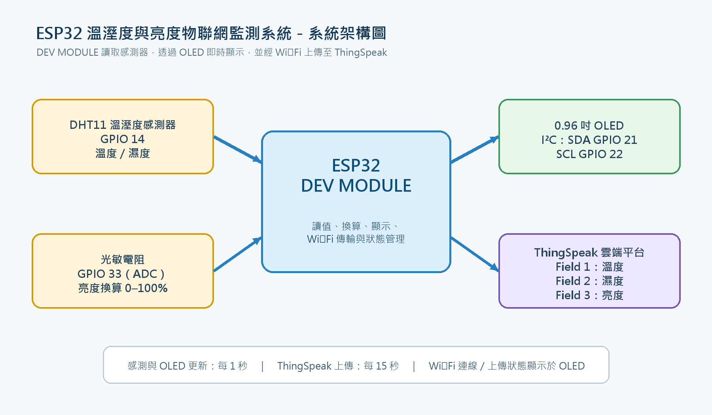
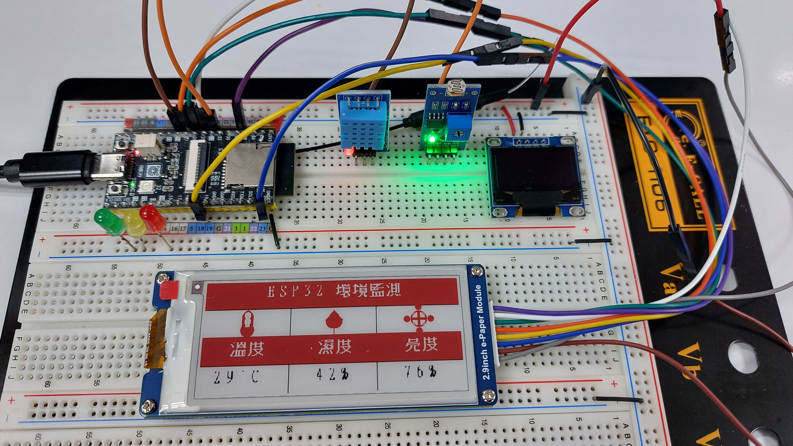
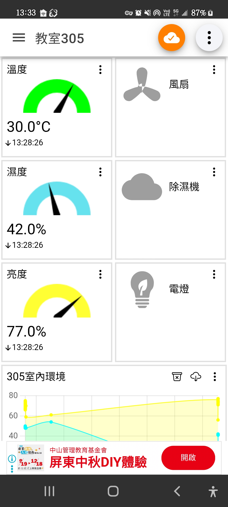
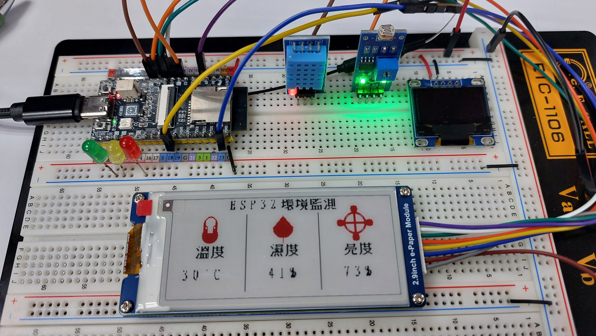

40
E-Paper MQTT
2.9 吋三色電子紙即時顯示溫度、濕度與亮度，並以 MQTT 發布資料。
ESP32 · DHT11 · MQTTOPEN SKETCH ↗
OPEN HARDWARE / 2026
一套以 ESP32 為核心的感測與聯網實驗室，把溫度、濕度與亮度從感測器送上 MQTT，再呈現在 TFT、OLED 與電子紙上。
01 / SYSTEM VIEW
本專案以模組化的方式累積 ESP32 開發經驗：先讀取感測器，再透過 Wi‑Fi 與 MQTT 傳遞資料，最後交給不同的顯示介面呈現。每個資料節點都能獨立測試，也能組合成完整的 IoT 原型。

SYSTEM ARCHITECTURE / 0102 / PROJECT TRACKS
2.9 吋三色電子紙即時顯示溫度、濕度與亮度，並以 MQTT 發布資料。
以 ILI9225 TFT 建立可互動的 MQTT 控制頁面與狀態視覺化。
小型、低功耗的 DHT 與光線感測節點，適合快速驗證與教學。
電子紙、QR code、字型資產與圖像排版的多輪實驗紀錄。
03 / FIELD NOTES



READY TO BUILD?